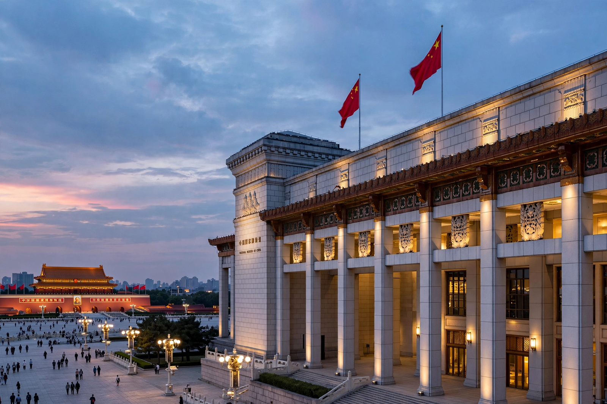

| National Museum of China | |
| Location | East side of Tiananmen Square, Beijing, China |
|---|---|
| Established | 2003 (merger); building originally opened 1959 |
| Collection size | More than 1.4 million items |
| Floor area | About 200,000 m² — among the largest museums in the world |
The National Museum of China is a museum in Beijing located on the eastern side of Tiananmen Square, opposite the Great Hall of the People. With a collection of more than 1.4 million objects and a floor area of around 200,000 square metres after its expansion, it is one of the largest museums in the world and one of the most visited.
The present institution was created in 2003 by merging the Museum of the Chinese Revolution and the National Museum of Chinese History, both of which had occupied the building since it opened in 1959 as one of the Ten Great Buildings marking the tenth anniversary of the People's Republic of China. A major renovation and expansion, designed by the German practice Gerkan, Marg and Partner with Chinese partners, was completed in 2011, nearly doubling the building while preserving its socialist-classicist facade and colonnade.
The permanent exhibition "Ancient China" displays the sweep of Chinese civilization from prehistory to the Qing dynasty, including the Houmuwu ding — at 832.84 kg the heaviest piece of ancient Chinese bronzeware known — a jade burial suit sewn with gold thread, Tang dynasty sancai-glazed pottery, and treasures from the Forbidden City collection. "The Road to Rejuvenation" covers modern Chinese history from the Opium Wars onward. The museum also hosts international loan exhibitions; a 2011 display of art from Germany's museums drew controversy for including a work by a contemporary artist critical of the Chinese government, whose name was omitted from publicity materials.